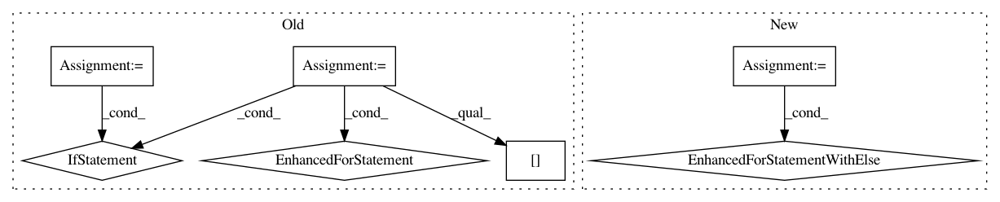

4a0065dac12887fc05b015adedd8121b0f027a8d,cellprofiler/modules/calculatemath.py,CalculateMath,run,#CalculateMath#Any#,267
Before Change
operand_object1 = self.operands[0].operand_objects.value
operand_object2 = self.operands[1].operand_objects.value
g = m.get_relationship_groups()
rk = None
for gg in g:
if gg.relationship == R_PARENT:
rk = gg
r = m.get_relationships(rk.module_number,
rk.relationship,
rk.object_name1,
rk.object_name2,
rk.group_number)
//
// first is parent of second
//
if (gg.object_name1 == operand_object1 and
gg.object_name2 == operand_object2):
i0 = r["object_number1"] - 1
i1 = r["object_number2"] - 1
break
elif (gg.object_name1 == operand_object2 and
gg.object_name2 == operand_object1):
i0 = r["object_number2"] - 1
i1 = r["object_number1"] - 1
break
if rk is None:
raise ValueError("Incompatable objects: %s has %d objects and %s has %d objects"%
(operand_object1, len(values[0]),
operand_object2, len(values[1])))
//
// Use np.bincount to broadcast or sum. Then divide the counts
// by the sum to get count=0 -> Nan, count=1 -> value
// count > 1 -> mean
//
def bincount(indexes, weights=None, minlength=None):
"""Minlength was added to numpy at some point...."""
result = np.bincount(indexes, weights)
if minlength is not None and len(result) < minlength:
After Change
operand_object2 = self.operands[1].operand_objects.value
g = m.get_relationship_groups()
for gg in g:
if gg.relationship == R_PARENT:
//
// first is parent of second
//
if (gg.object_name1 == operand_object1 and
gg.object_name2 == operand_object2):
f0 = cpmeas.R_FIRST_OBJECT_NUMBER
f1 = cpmeas.R_SECOND_OBJECT_NUMBER
elif (gg.object_name1 == operand_object2 and
gg.object_name2 == operand_object1):
f1 = cpmeas.R_FIRST_OBJECT_NUMBER
f0 = cpmeas.R_SECOND_OBJECT_NUMBER
else:
continue
r = m.get_relationships(gg.module_number,
gg.relationship,
gg.object_name1,
gg.object_name2)
mask = (
(r[cpmeas.R_FIRST_IMAGE_NUMBER] == m.image_set_number) &
(r[cpmeas.R_SECOND_IMAGE_NUMBER] == m.image_set_number))
i0 = r[f0][mask] - 1
i1 = r[f1][mask] - 1
break
else:
raise ValueError("Incompatable objects: %s has %d objects and %s has %d objects"%
(operand_object1, len(values[0]),
operand_object2, len(values[1])))
//
// Use np.bincount to broadcast or sum. Then divide the counts
// by the sum to get count=0 -> Nan, count=1 -> value
// count > 1 -> mean
//
def bincount(indexes, weights=None, minlength=None):
"""Minlength was added to numpy at some point...."""
result = np.bincount(indexes, weights)
if minlength is not None and len(result) < minlength:
In pattern: SUPERPATTERN
Frequency: 3
Non-data size: 7
Instances
Project Name: CellProfiler/CellProfiler
Commit Name: 4a0065dac12887fc05b015adedd8121b0f027a8d
Time: 2013-03-21
Author: leek@broadinstitute.org
File Name: cellprofiler/modules/calculatemath.py
Class Name: CalculateMath
Method Name: run
Project Name: keras-team/keras
Commit Name: ced84c4b42d9186842e4cad6c11b0c8f2c18439b
Time: 2017-06-16
Author: chris.kerr@athion.de
File Name: keras/wrappers/scikit_learn.py
Class Name: BaseWrapper
Method Name: check_params
Project Name: keras-team/keras
Commit Name: 04a20177cf332004a291cee626c20a0262427796
Time: 2017-06-21
Author: chris.kerr@athion.de
File Name: keras/wrappers/scikit_learn.py
Class Name: BaseWrapper
Method Name: check_params